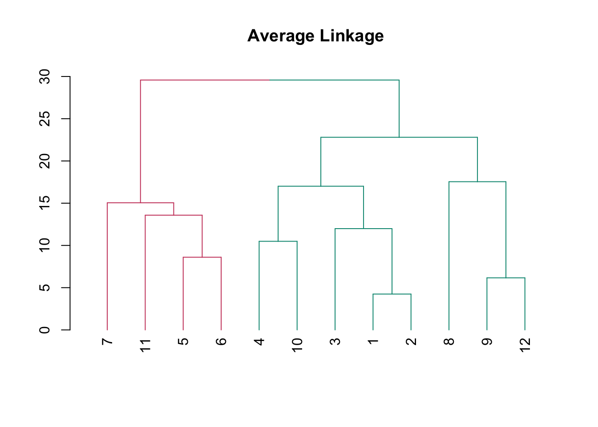
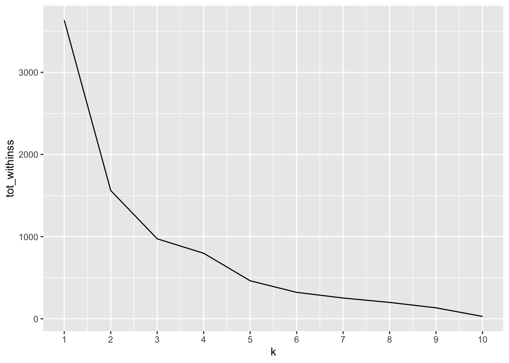
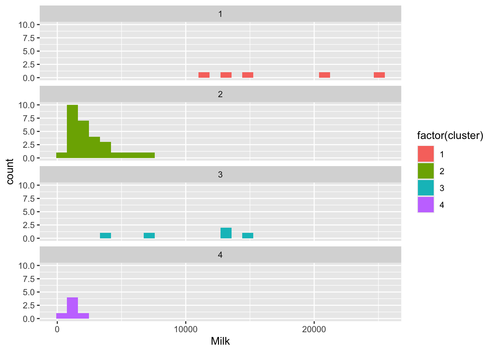

#安装和加载包
#install.packages("ggplot2")
#install.packages("tidyverse")
#install.packages("dendextend")
#install.packages("purrr")
#install.packages("readr")
#install.packages("readxl")
library(ggplot2)
library(tidyverse)
library(dendextend)
library(purrr)4 聚类分析在R中的实现
本章介绍R中的聚类分析工具。
系统聚类 hierarchical clustering
 点击下载数据文件: match.xlsx
点击下载数据文件: match.xlsx #12人球赛，读取match.xlsx
#请注意自己电脑上"match.xlsx"的文件路径
library(readxl)
match <- read_excel("match.xlsx")
match# A tibble: 12 × 3
ID x y
<dbl> <dbl> <dbl>
1 1 -1 1
2 2 -2 -3
3 3 8 6
4 4 7 -8
5 5 -12 8
6 6 -15 0
7 7 -13 -10
8 8 15 16
9 9 21 2
10 10 12 -15
11 11 -25 1
12 12 26 0逐步运行
Step 1: 计算两点之间的距离 dist()
#请查看dist帮助
dist_match <- dist(match)
dist_match 1 2 3 4 5 6 7
2 4.242641
3 10.488088 13.490738
4 12.409674 10.488088 14.071247
5 13.638182 15.165751 20.199010 24.859606
6 14.899664 13.928388 23.958297 23.494680 8.602325
7 17.349352 13.964240 26.702060 20.322401 18.138357 10.246951
8 23.021729 26.191602 13.190906 25.612497 28.319605 34.058773 38.223030
9 23.430749 24.556058 14.866069 17.916473 33.778692 36.180105 36.110940
10 22.494444 20.099751 22.494444 10.488088 33.615473 31.144823 25.670995
11 26.000000 25.019992 34.322005 33.970576 15.937377 11.224972 16.763055
12 29.171904 29.883106 21.000000 22.113344 39.458839 41.436699 40.570926
8 9 10 11
2
3
4
5
6
7
8
9 15.264338
10 31.208973 19.261360
11 42.825226 46.054316 40.323690
12 19.824228 6.164414 20.615528 51.019604Step 2 : 系统聚类 hclust()
#请查看hclust帮助
hc_match <- hclust(dist_match, "complete")Step 3 : 指定类数 cutree()
cluster_assignments <- cutree(hc_match, k = 2)
cluster_assignments [1] 1 1 2 2 1 1 1 2 2 2 1 2#将分类结果追加到数据集中
match_cluster <- mutate(match, cluster = cluster_assignments )
match_cluster# A tibble: 12 × 4
ID x y cluster
<dbl> <dbl> <dbl> <int>
1 1 -1 1 1
2 2 -2 -3 1
3 3 8 6 2
4 4 7 -8 2
5 5 -12 8 1
6 6 -15 0 1
7 7 -13 -10 1
8 8 15 16 2
9 9 21 2 2
10 10 12 -15 2
11 11 -25 1 1
12 12 26 0 2#聚类结果可视化
match_cluster %>%
ggplot(aes(x, y, col = factor(cluster)))+
geom_point(size = 6)+
geom_text(aes(label = ID, hjust = - 1, size = 4))Step 4 : 统计每一类的个案个数count()
count(match_cluster, cluster)# A tibble: 2 × 2
cluster n
<int> <int>
1 1 6
2 2 6Step 5 : 绘制树状图Dendrogram
#绘制树状图
plot(hc_match)#所有个案从水平线出发
plot(hc_match, hang = -1)
#给分支添加矩形框
rect.hclust(hc_match, k = 2, border = 2)#给分支添加不同的颜色,指定切开的高度h= 或者指定组数k=
#加载包
library(dendextend)
dend_match <- as.dendrogram(hc_match)
dend_match_40 <- color_branches(dend_match, h = 40)Loading required namespace: colorspaceplot(dend_match_40)
Step 6 : 计算各组均值
library(psych)
Attaching package: 'psych'The following objects are masked from 'package:ggplot2':
%+%, alphamatch_cluster %>%
group_by(cluster) %>%
summarise_all(list(mean))# A tibble: 2 × 4
cluster ID x y
<int> <dbl> <dbl> <dbl>
1 1 5.33 -11.3 -0.5
2 2 7.67 14.8 0.167管道符 %>%
Step 1-6
library(tidyverse)
#将聚类结果保存到cluster_assignments
cluster_assignments <-match %>%
dist() %>%
hclust("complete") %>%
cutree(2)
#将聚类结果cluster_assignments追加到数据集match_cluster
match_cluster <- match %>% mutate(cluster =
cluster_assignments)
#聚类结果可视化
match_cluster%>%
ggplot(aes(x,y,col = factor(cluster)))+
geom_point(size = 6) #统计每个组别有多少个案
count(match_cluster, cluster) # A tibble: 2 × 2
cluster n
<int> <int>
1 1 6
2 2 6#绘制树状图
match %>%
dist() %>%
hclust("complete") %>%
plot()
#树状图的分支上色
library(dendextend)
match %>%
dist() %>%
hclust("complete") %>%
as.dendrogram() %>%
color_branches(h = 40) %>%
plot()match %>%
dist() %>%
hclust("complete") %>%
as.dendrogram() %>%
color_branches(k = 3) %>%
plot()不同聚类方案下的树状图
#绘制三种连接法linkage method下的树状图
match %>%
dist() %>%
hclust("complete") %>%
as.dendrogram() %>%
color_branches(k = 2) %>%
plot(main = "Complete Linkage")match %>%
dist() %>%
hclust("single") %>%
as.dendrogram() %>%
color_branches(k = 2) %>%
plot(main = "Single Linkage")match %>%
dist() %>%
hclust("average") %>%
as.dendrogram() %>%
color_branches(k = 2) %>%
plot(main = "Average Linkage")
K-means
kmeans()
#k-means估计
model <- kmeans(match, centers = 3)
#查看model中保存的对象
attributes(model)$names
[1] "cluster" "centers" "totss" "withinss" "tot.withinss"
[6] "betweenss" "size" "iter" "ifault"
$class
[1] "kmeans"#查看model中保存的聚类结果
model$cluster [1] 3 3 1 1 3 3 3 1 1 1 2 1#将model中保存的聚类结果追加到数据框match_kmeans
match_kmeans <- mutate(match, cluster = model$cluster)确定k: elbow plot
#加载包purrr
library(purrr)
#查看within-cluster sum of squares
model$tot.withinss[1] 1295.8# Use map_dbl to run many models with varying value of k (centers)
tot_withinss <- map_dbl(1:10, function(k){
model <- kmeans(match, k)
model$tot.withinss
})
# map_dbl(1:10, function(k) {...}): 这一部分使用 map_dbl() 函数，对 1 到 10 的整数进行循环迭代，其中 k 是循环变量，对应不同的聚类数。对于每个 k 值，它会执行以下操作：
#
# model <- kmeans(match, k): 使用 kmeans() 函数进行 K 均值聚类，其中 match 是输入的数据集，k 是聚类数。这一步创建了一个 K 均值聚类模型 model。
#
# model$tot.withinss: 从聚类模型 model 中获取总内部平方和 tot.withinss 的值，它表示每个点到其所属簇的距离的平方和。
# Generate a data frame containing both k and tot_withinss
elbow_df <- data.frame(
k = 1:10,
tot_withinss = tot_withinss
)
elbow_df k tot_withinss
1 1 3632.9167
2 2 1561.1667
3 3 973.1833
4 4 723.7500
5 5 462.2500
6 6 340.6667
7 7 207.0000
8 8 170.0000
9 9 151.0000
10 10 64.0000# Plot the elbow plot
ggplot(elbow_df, aes(k, tot_withinss)) +
geom_line() +
scale_x_continuous(breaks = 1:10)
举例：超市顾客消费分析
#读取"customers.xlsx"
library(readxl)
customers <- read_excel("customers.xlsx")逐步运行
dist_customers <- dist(customers)
hc_customers <- hclust(dist_customers)
clust_customers <- cutree(hc_customers, h = 15000)
segment_customers <- mutate(customers, cluster = clust_customers)
# Count the number of customers that fall into each cluster
count(segment_customers, cluster)# A tibble: 4 × 2
cluster n
<int> <int>
1 1 5
2 2 29
3 3 5
4 4 6# Color the dendrogram based on the height cutoff
library(dendextend)
dend_customers <- as.dendrogram(hc_customers)
dend_colored <- color_branches(dend_customers, h = 15000)
# Plot the colored dendrogram
plot(dend_colored)
# Calculate the mean for each category
segment_customers %>%
group_by(cluster) %>%
summarise_all(list(mean))# A tibble: 4 × 5
cluster ID Milk Grocery Frozen
<int> <dbl> <dbl> <dbl> <dbl>
1 1 16.2 16950 12891. 991.
2 2 21.9 2513. 5229. 1796.
3 3 18.6 10452. 22551. 1355.
4 4 37.5 1250. 3917. 10889.管道符 %>%
segment_customers <- customers %>%
dist() %>%
hclust() %>%
cutree(h = 15000) %>%
mutate(customers, cluster = .)
customers %>%
dist() %>%
hclust() %>%
as.dendrogram() %>%
color_branches(h = 15000) %>%
plot()count(segment_customers, cluster)# A tibble: 4 × 2
cluster n
<int> <int>
1 1 5
2 2 29
3 3 5
4 4 6#报告各类均值
segment_customers %>%
select(2:5) %>%
group_by(cluster) %>%
summarise_all(list(mean))# A tibble: 4 × 4
cluster Milk Grocery Frozen
<int> <dbl> <dbl> <dbl>
1 1 16950 12891. 991.
2 2 2513. 5229. 1796.
3 3 10452. 22551. 1355.
4 4 1250. 3917. 10889.#分组直方图
segment_customers %>%
ggplot(aes(Milk, fill = factor(cluster)))+
geom_histogram()+
facet_wrap(~cluster, ncol = 1)`stat_bin()` using `bins = 30`. Pick better value with `binwidth`.
#分组箱线图
segment_customers %>%
ggplot(aes(Milk, fill = factor(cluster)))+
geom_boxplot()+
facet_wrap(~cluster, ncol = 1)boxplot(segment_customers$Frozen ~ segment_customers$cluster,
horizontal = T,
col = 5,
las = 1)
本章作业
答题要求：将R的命令和输出结果转成图片，上传至91速课平台。
习题1: 教材P64,例题4.1
要求：运用系统聚类法对10种酒进行聚类。自行选择距离的测度方法、类的连接法。
1.1 说明你使用的距离的测度方法、类的连接法分别是什么？
1.2 报告10种酒的距离矩阵。
1.3 报告树状图。
1.4 你将10种酒分为几类，每一类分别有多少个个案？
1.5 简要概括每一类的特征。
习题2: 教材P67,例题4.2
要求：运用K-means法对31个省市行聚类，实现例题中的所有输出结果。
习题3: 教材P75-76，习题4.1和习题4.2任选其中一题。
要求：运用系统聚类法对题目中的个案进行聚类。自行选择距离的测度方法、类的连接法。
3.1 说明你使用的距离的测度方法、类的连接法分别是什么？
3.2 报告所有个案的距离矩阵。
3.3 报告树状图。
3.4 你将题目中的个案分为几类，每一类分别有多少个个案？
3.5 简要概括每一类的特征。
习题4: 教材P77，习题4.3。
要求：运用K-均值法对题目中的个案进行聚类。
4.1 说明你使用的距离的测度方法是什么？
4.2 你将113个城市分为几类，每一类分别有多少个城市？
4.3 简要概括每一类的特征。